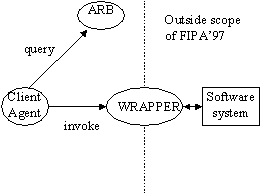
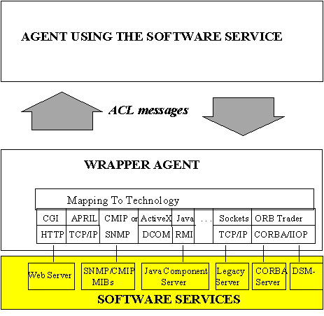
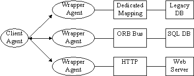
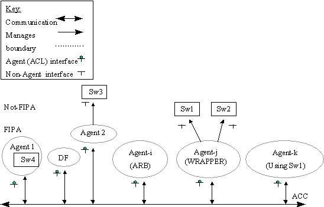

Contents
1 Scope....................................................................................................................................... 3
2 Normative
reference(s)........................................................................................................ 3
3 Term(s)
and definition(s)..................................................................................................... 3
4 Symbols
(and abbreviated terms).................................................................................... 3
5 Overview
of Agent Software Integration......................................................................... 3
6 Normative
Specification...................................................................................................... 3
6.1 Reference Model................................................................................................................... 3
6.2 Agent
Resource Broker service....................................................................................... 3
6.2.1 FIPA-ARB
Ontology............................................................................................................. 3
6.2.2 Querying
the ARB................................................................................................................ 3
6.2.3 Registering
the ARB service with the DF....................................................................... 3
6.2.4 Conformance......................................................................................................................... 3
6.3 Wrapper
Service................................................................................................................... 3
6.3.1 FIPA-WRAPPER
Ontology................................................................................................. 3
6.3.2 Querying
the WRAPPER.................................................................................................... 3
6.3.3 Registering
the WRAPPER service with the DF........................................................... 3
6.3.4 Conformance......................................................................................................................... 3
Annex A(normative) EBNF
Grammar for FIPA-ARB Ontology................................................... 3
Annex B(normative) EBNF
Grammar for FIPA-WRAPPER Ontology....................................... 3
Foreword
The Foundation for Intelligent Physical
Agents (FIPA) is a non-profit association registered in Geneva, Switzerland.
FIPA’s purpose is to promote the success of emerging agent-based applications,
services and equipment. This goal is pursued by making available in a timely
manner, internationally agreed specifications that maximise interoperability
across agent-based applications, services and equipment. This is realised
through the open international collaboration of member organisations, which are
companies and universities active in the agent field. FIPA intends to make the
results of its activities available to all interested parties and to contribute
the results of its activities to appropriate formal standards bodies.
This specification has been developed
through direct involvement of the FIPA membership. The 35 corporate members of
FIPA (October 1997) represent 12 countries from all over the world
Membership in FIPA is open to any corporation
and individual firm, partnership, governmental body or international
organisation without restriction. By joining FIPA each Member declares himself
individually and collectively committed to open competition in the development
of agent-based applications, services and equipment. Associate Member status is
usually chosen by those entities who do want to be members of FIPA without
using the right to influence the precise content of the specifications through
voting.
The Members are not restricted in any
way from designing, developing, marketing and/or procuring agent-based
applications, services and equipment. Members are not bound to implement or use
specific agent-based standards, recommendations and FIPA specifications by
virtue of their participation in FIPA.
This specification is published as FIPA
97 ver. 1.0 after two previous versions have been subject to public comments
following disclosure on the WWW. It has undergone intense review by members as
well non-members. FIPA is now starting a validation phase by encouraging its
members to carry out field trials that are based on this specification. During
1998 FIPA will publish FIPA 97 ver. 2.0 that will incorporate whatever
adaptations will be deemed necessary to take into account the results of field
trials.
Introduction
This FIPA 97 specification is the first output of the
Foundation for Intelligent Physical Agents. It provides specification of basic
agent technologies that can be integrated by agent systems developers to make
complex systems with a high degree of interoperability.
FIPA
specifies the interfaces of the different components in the environment with
which an agent can interact, i.e. humans, other agents, non-agent software and
the physical world. See figure below

FIPA produces two kinds of
specification:
¾
normative specifications that mandate the
external behaviour of an agent and ensure interoperability with other
FIPA-specified subsystems;
¾
informative specifications of applications for
guidance to industry on the use of FIPA technologies.
The first
set of specifications – called FIPA 97 – has seven parts:
¾
three normative parts for basic agent technologies: agent
management, agent communication language and agent/software integration
¾
four informative application descriptions that provide
examples of how the normative items can be applied: personal travel assistance,
personal assistant, audio-visual entertainment and broadcasting and network
management and provisioning.
Overall,
the three FIPA 97 technologies allow:
¾
the construction and management of an agent system composed
of different agents, possibly built by different developers;
¾
agents to communicate and interact with each other to
achieve individual or common goals;
¾
legacy software or new non-agent software systems to be used
by agents.
A brief
illustration of FIPA 97 specification is given below
Part 1
Agent Management
This part
of FIPA 97 provides a normative framework within which FIPA compliant agents
can exist, operate and be managed.
It defines
an agent platform reference model containing such capabilities as white and
yellow pages, message routing and life-cycle management. True to the FIPA
approach, these capablities are themselves intelligent agents using formally
sound communicative acts based on special message sets. An appropriate ontology
and content language allows agents to discover each other’s capabilities.
Part 2
Agent Communication Language
The FIPA
Agent Communication Language (ACL) is based on speech act theory: messages are
actions, or communicative acts, as
they are intended to perform some action by virtue of being sent. The
specification consists of a set of message types and the description of their
pragmatics, that is the effects on the mental attitudes of the sender and
receiver agents. Every communicative act is described with both a narrative
form and a formal semantics based on modal logic.
The
specifications include guidance to users who are already familiar with KQML in
order to facilitate migration to the FIPA ACL.
The
specification also provides the normative description of a set of high-level
interaction protocols, including requesting an action, contract net and several
kinds of auctions etc.
Part 3
Agent/Software Integration
This part
applies to any other non-agentised software with which agents need to
“connect”. Such software includes legacy software, conventional database
systems, middleware for all manners of interaction including hardware drivers.
Because in most significant applications, non-agentised software may dominate
software agents, part 3 provides important normative statements. It suggests
ways by which Agents may connect to software via “wrappers” including
specifications of the wrapper ontology and the software dynamic registration
mechanism. For this purpose, an Agent Resource Broker (ARB) service is defined
which allows advertisement of non-agent services in the agent domain and
management of their use by other agents, such as negotiation of parameters (e.g. cost and priority), authentication
and permission.
Part 4 -
Personal Travel Assistance
The travel
industry involves many components such as content providers, brokers, and
personalization services, typically from many different companies. In applying agents to this industry, various
implementations from various vendors must interoperate and dynamically discover
each other as different services come and go. Agents operating on behalf of
their users can provide assistance in the pre-trip planning phase, as well as
during the on-trip execution phase. A system supporting these services is
called a PTA (Personal Travel Agent).
In order
to accomplish this assistance, the PTA interacts with the user and with other
agents, representing the available travel services. The agent system is
responsible for the configuration and delivery - at the right time, cost,
Quality of Service, and appropriate security and privacy measures - of trip
planning and guidance services. It provides examples of agent technologies for
both the hard requirements of travel such as airline, hotel, and car
arrangements as well as the soft added-value services according to personal
profiles, e.g. interests in sports, theatre, or other attractions and
events.
Part 5 -
Personal Assistant
One
central class of intelligent agents is that of a personal assistant (PA). It is
a software agent that acts semi-autonomously for and on behalf of a user,
modelling the interests of the user and providing services to the user or other
people and PAs as and when required. These services include managing a user's
diary, filtering and sorting e-mail, managing the user's activities, locating
and delivering (multimedia) information, and planning entertainment and travel.
It is like a secretary, it accomplishes routine support tasks to allow the user
to concentrate on the real job, it is unobtrusive but ready when needed, rich
in knowledge about user and work. Some of the services may be provided by other
agents (e.g. the PTA) or systems, the Personal Assistant acts as an interface
between the user and these systems.
In the
FIPA 97 test application, a Personal Assistant offers the user a unified,
intelligent interface to the management of his personal meeting schedule. The
PA is capable of setting up meetings with several participants, possibly
involving travel for some of them. In this way FIPA is opening up a road for
adding interoperability and agent capabilities to the already established.
Part 6 -
Audio/Video Entertainment & Broadcasting
An
effective means of information filtering and retrieval, in particular for
digital broadcasting networks, is of great importance because the selection
and/or storage of one’s favourite choice from plenty of programs on offer can
be very impractical. The information should be provided in a customised manner,
to better suit the user’s personal preferences and the human interaction with
the system should be as simple and intuitive as possible. Key functionalities
such as profiling, filtering, retrieving, and interfacing can be made more
effective and reliable by the use of agent technologies.
Overall,
the application provides to the user an intelligent interface with new and
improved functionalities for the negotiation, filtering, and retrieval of
audio-visual information. This set of functionalities can be achieved by
collaboration between a user agent and content/service provider agent.
Part 7 -
Network management & provisioning
Across the
world, numerous service providers emerge that combine service elements from
different network providers in order to provide a single service to the end
customer. The ultimate goal of all parties involved is to find the best deals
available in terms of Quality of Service and cost. Intelligent Agent technology
is promising in the sense that it will facilitate automatic negotiation of
appropriate deals and configuration of services at different levels.
Part 7 of
FIPA 1997 utilizes agent technology to provide dynamic Virtual Private Network
(VPN) services where a user wants to set up a multi-media connection with
several other users.
The
service is delivered to the end customer using co-operating and negotiating
specialized agents. Three types of agents are used that represent the interests
of the different parties involved:
¾
The Personal Communications Agent (PCA) that represents the
interests of the human users.
¾
The Service Provider Agent (SPA) that represents the
interests of the Service Provider.
¾
The Network Provider Agent (NPA) that represents the
interests of the Network Provider.
The
service is established by the initiating user who requests the service from its
PCA. The PCA negotiates in with available SPAs to obtain the best deal
available. The SPA will in turn negotiate with the NPAs to obtain the optimal
solution and to configure the service at network level. Both SPA and NPA
communicate with underlying service- and network management systems to
configure the underlying networks for the service.
FIPA Agent Software / Integration
1 Scope
This document provides a
specification which deals with technologies enabling the integration of
services provided by non-agent software into a multi-agent community. This part
of the FIPA 97 International Standard defines in general the relationship
between agents and software systems. The purpose of this standard is twofold:
it allows agents to describe, broker and negotiate over software systems; and
it allows new software services to be dynamically introduced into an agent
community. The specification defines a reference model, identifying agent roles
(e.g. broker, client, etc.) and the messages / actions which define each of
these roles. It builds upon the [PART2]
Agent Communication (structure and semantics of inter-agent communication)
and [PART1] Agent Management specifications.
This standard operates at the
agent-communication level and does not define any mappings to specific software
architectures such as Java, CORBA or DCOM. Such mappings are considered outside
the scope of FIPA 97.
This specification enables
developers to build:
·
wrappers for software services which are to be utilized
and/or controlled by a community of agents (so called “public services”);
·
agents which provide the Agent Resource Broker (ARB) service
to allow for registration in a query repository and management of such software
services;
·
agents ready to access such public services.
It is also intended to be
used in the future by third party developers wishing to implement new software
systems ready to be used by FIPA-compliant agents.
To keep the applicability of
this specification as unrestricted as possible, the approach used is platform
independent.
[PART1] FIPA 97, Foundation for Intelligent Physical Agents -
Part 1: Agent Management
[PART2] FIPA 97, Foundation for Intelligent Physical Agents -
Part 2: Agent Communication Language
For the purposes of this
specification, the following terms and definitions apply:
Action
A basic construct which
represents some activity which an agent may perform. A special class of actions
is the communicative acts.
Agent Communication Language
(ACL)
A language with precisely
defined syntax, semantics and pragmatics that is the basis of communication
between independently designed and developed software agents.
ARB Agent
An agent which provides the
Agent Resource Broker (ARB) service. There must be at least one such an agent
in each Agent Platform in order to allow the sharing of non-agent services.
Communicative Act (CA)
A special class of actions that correspond to the basic
building blocks of dialogue between agents. A communicative act has a
well-defined, declarative meaning independent of the content of any given act.
CA's are modelled on speech act theory.
Pragmatically, CA's are performed by an agent sending a message to another agent, using the message format described in
this specification.
Content
That part of a communicative
act which represents the domain dependent component of the communication. Note
that "the content of a message" does
not refer to "everything within
the message, including the delimiters", as it does in some languages, but
rather specifically to the domain specific component. In the ACL semantic
model, a content expression may be composed from propositions, actions or IRE's.
Conversation
An ongoing sequence of
communicative acts exchanged between two (or more) agents relating to some
ongoing topic of discourse. A conversation may (perhaps implicitly) accumulate
context which is used to determine the meaning of later messages in the
conversation.
Knowledge Querying and
Manipulation Language (KQML)
A de facto (but widely used) specification of a language for
inter-agent communication. In practice, several implementations and variations
exist.
Message
An individual unit of
communication between two or more agents. A message corresponds to a
communicative act, in the sense that a message encodes the communicative act
for reliable transmission between agents. Note that communicative acts can be
recursively composed, so while the outermost act is directly encoded by the
message, taken as a whole a given message may represent multiple individual
communicative acts.
Message content
See content.
Message transport service
The message transport service is an abstract service provided by the
agent management platform to which the agent is (currently) attached. The
message transport service provides for the reliable and timely delivery of
messages to their destination agents, and also provides a mapping from agent logical
names to physical transport addresses.
Ontology
An ontology gives meanings to symbols and expressions within a given
domain language. In order for a message from one agent to be properly
understood by another, the agents must ascribe the same meaning to the
constants used in the message. The ontology performs the function of mapping a
given constant to some well-understood meaning. For a given domain, the
ontology may be an explicit construct or implicitly encoded with the
implementation of the agent.
Ontology sharing problem
The problem of ensuring that
two agents who wish to converse do, in fact, share a common ontology for the
domain of discourse. Minimally, agents should be able to discover whether or
not they share a mutual understanding of the domain constants. Some research
work is addressing the problem of dynamically updating agents' ontologies as
the need arises. This specification makes no provision for dynamically sharing
or updating ontologies.
Proposition
A statement which can be
either true or false. A closed
proposition is one which contains no variables, other than those defined
within the scope of a quantifier.
Protocol
A common pattern of conversations used to perform some
generally useful task. The protocol is often used to facilitate a
simplification of the computational machinery needed to support a given
dialogue task between two agents. Throughout this document, we reserve protocol to refer to dialogue patterns
between agents, and networking or communication protocol to refer to underlying
transport mechanisms such as TCP/IP.
Software System
A software entity which is
not conformant to the FIPA Agent Management specification.
Software Service
An instantiation of a
connection to a software system.
Speech Act Theory
A theory of communications
which is used as the basis for ACL. Speech act theory is derived from the
linguistic analysis of human communication. It is based on the idea that with
language the speaker not only makes statements, but also performs actions. A
speech act can be put in a stylised form that begins "I hereby request
…" or "I hereby declare …". In this form the verb is called the performative, since saying it makes it
so. Verbs that cannot be put into this form are not speech acts, for example
"I hereby solve this equation" does not actually solve the equation.
[Austin 62, Searle 69].
In speech act theory, communicative acts are decomposed into
locutionary, illocutionary and perlocutionary
acts. Locutionary acts refers to the formulation of an utterance, illocutionary
refers to a categorisation of the utterance from the speakers perspective (e.g.
question, command, query, etc), and perlocutionary refers to the other intended
effects on the hearer. In the case of the ACL, the perlocutionary effect refers
to the updating of the agent's mental attitudes.
TCP/IP
A networking protocol used to
establish connections and transmit data between hosts on the Internet.
Wrapper Agent
An agent which provides the
FIPA-WRAPPER service to an agent domain.
ACC: Agent
Communication Channel
ACL: Agent
Communication Language
API: Application
Programming Interface
ARB: Agent
Resource Broker
CA: Communicative Act
CORBA: Common Object
Request Broker Architecture
DB: Database
DCOM: Distributed COM
DF: Directory
Facilitator
FIPA: Foundation
for Intelligent Physical Agents
HTTP: Hypertext Transfer Protocol
IDL: Interface
Definition Language
IIOP: Internet Inter-ORB Protocol
OMG: Object Management Group
ORB: Object
Request Broker
RMI: Remote
Method Invocation, an
inter-process communication method embodied in the Java programming language.
SL: Semantic
Language
SMTP: Simple Mail Transfer Protocol
SQL: Structured
Query Language
Sw: Software
System
TCP
/ IP: Transmission Control Protocol / Internet Protocol
In most significant
applications, agents may have a need to obtain a service by other entities in
the system. Sometimes, such services could be provided by other agents.
However, there are and in the future there will continue to be a wealth of
non-agent software systems which provide useful services. If agents are to be
truly useful they must be able to interface with and control existing software
system such as databases, web-browsers, set-top boxes, speech synthesis
programs and so forth.
This specification defines
how software resources can be described, shared and dynamically controlled in
an agent community. Software systems are characterised by software descriptions which define the nature of the software
system and how to connect to it. The rationale behind this specification is to
allow agents to openly share and trade software resources with each other.
Allowing agents to communicate about software resources, means agents can
inform each other about the existence of new software resources and thereby
facilitate the dynamic inclusion and management of new software systems. This
provides agents with a method by which they can dynamically acquire new
capabilities.
FIPA 97 concerns itself with
how agents can connect to and control external
software systems, that is systems which are external to and independent of an
agents execution context. By way of contrast, internal attachment to software,
where the software is included in an agents execution context is not considered
in FIPA 97 as it would require assumptions to be made about the internal
implementation of agents.
Software systems come in all
shapes and sizes. Many different types of interfaces are possible each with
their own particular networking protocol, strengths and weaknesses.
Furthermore, there are a number of emerging distribution technologies such as
CORBA, DCOM and Java / Java-RMI which are creating (competing) standards for
the integration of software systems and resources. To simplify this situation
and to provide the freedom to agent-programmers, this specification does not
mandate the use of any particular API or distribution technology, rather it
treats software integration at the agent-communication level. That is in terms
of the types and contents of messages exchanged between agents. To support
this, two new agent roles have been
identified:

Figure 1 — General Agent Software Integration
Scenario
a) Agent
Resource Broker (ARB) - an ARB agent brokers a set of software descriptions to interested agents. Clients query it about
what software services are available.
b) WRAPPER
Agent - this agent allows an agent to connect to a software system uniquely
identified by a software description.
Client Agents can relay commands to the WRAPPER agent and have them invoked on
the underlying software system. The
role provided by the WRAPPER agent provides a single generic way for agents to
interact with software systems.

Figure 2 — Layered Model for a Wrapper
In this document we refer to
ARB and WRAPPER agents. However, these are defined as agent capabilities rather
than explicit agent types. Each capability is defined by an ontology (defining
the syntax and semantics of a set of actions and predicates) which are
supported by an agent fulfilling the corresponding ARB or WRAPPER role.
NOTE This
specification is only concerned with the interactions between agents. How a
WRAPPER agent actually connects to and invokes operations on a software system
is the responsibility of individual WRAPPER agent developers. WRAPPER agents
can be specific in that they only support specific types of software systems,
or they may be able to support connections to a number of different software
system types.

Figure 3 — Example Scenario WRAPPER Agents and Software Systems
Figure 3 shows three examples
of possible WRAPPER Agents. The top WRAPPER agent provides a dedicated mapping
to a legacy database over, for example say, the TCP/IP protocol. The top
WRAPPER agent will set-up a connection to the legacy DB and will translate
invocation requests from the client agent into operations on the legacy
database. The bottom WRAPPER agent provides a mapping to the application-level
HTTP protocol, enabling the client agent to access internet resources from
web-servers. Finally, the middle WRAPPER agent provides a mapping to a CORBA
standard Object Request Broker (ORB) allowing the client agent to manipulate an
SQL database over an ORB bus. This WRAPPER agent could be specialised to
accessing just SQL databases using CORBA ORBs or it could be a more general
WRAPPER agent which supports dynamic connection to any system which has been
registered with the ORB’s Implementation Repository.
This specification contains a
normative part (section 6) which provides details about how to find and
interface with software systems in a manner which is FIPA compliant.
This
section contains the detailed normative specification of how software systems
should be integrated into an agent domain. A reference model is presented which
identifies agent roles such as ARB and WRAPPER. For each role it defines the
ACL messages and actions and predicates (service ontology) which are understood
by agents who fulfill these roles in an agent domain.

Figure 4 — Reference Model
Figure 4
extends the conceptual view of an agent domain, as defined in [PART1 Agent Management], to include two
new agent roles (ARB and WRAPPER). The entities of this reference model are:
¾
Directory Facilitator (DF)
- this is a specialized agent which provides a “yellow pages” directory
service. Agents advertise their services to an agent domain by registering
service-descriptions with the DF.
¾
Agent Communication Channel (ACC) this provides a
message-routing function for inter-agent communication. Messages are defined
according to the Agent Communication Language (ACL) as defined by [PART2 Agent Communication]. It can be
accessed by non-agent entities in order to route messages to agents but
non-agent entities cannot be the recipients of messages routed via the ACC.
¾
Software (Sw) - these are non-agent software entities which
are controllable through some transport medium, encoding scheme, message format
and interaction scheme (communication or networking protocol). Such interfaces
are application dependent and are outside the scope of FIPA
standardisation.
¾
ARB Agent (Agent-i in the figure) - this is an agent which
supports the ARB capability as defined in this specification. An ARB agent
brokers a set of software descriptions
to interested client agents. An ARB advertises this service to the agent domain
by registering with the DF. See section 0
for further details.
Software
services are described by textual software
descriptions which list the properties of the software service. Part of the
software description will describe where the software is located and how to
interface with it (e.g. networking protocols, encoding types supported). An
agent providing the ARB interface supports the FIPA-ARB ontology with commands
and predicates for registering and searching for software services.
¾
WRAPPER Agent (Agent-j in the figure) - this is an agent
which can dynamically interface with a software system uniquely described by a software description. The WRAPPER agent
will allow client agents to invoke commands on the underlying software system,
translating the commands contained in ACL messages into operations on the
underlying software system. WRAPPER agents may be able to support multiple
connections to software systems simultaneously.
NOTE A WRAPPER agent which supports the full
WRAPPER ontology is considered to provide more than a simple bridging function
to an external software system. Such an agent implicitly provides a management
functionality.
A WRAPPER
agent supports the FIPA-WRAPPER ontology with commands and predicates for
initialising and issuing requests to software systems.
How a
WRAPPER agent is implemented and what interface exists between the WRAPPER
agent and the underlying software system which provides the software service is
a matter for WRAPPER developers and third-party tool support vendors. It is
outside the scope of this specification.
A key
point to remember is that WRAPPER agents have the ability to dynamically manage
new software devices. This is the conceptual difference between a WRAPPER agent
and an agent which upgrades a software service to being an agent-level service.
This difference will of course be reflected in the Directory Facilitator (DF).
To illustrate the point consider two agents: The first agent has the capability
to send and receive email and accordingly it will advertise this service in its
DF entry. The second agent has the capability of connecting to an email
service, it is a WRAPPER agent and will accept a description of the software
service required (in this case the location of the mailhost and the networking
protocol to use e.g. POP-3). The first agent will allow a client to send and
receive email; it has a static connection to a given email server. The second
agent will allow an agent to dynamically connect to a remote email service
identified by a software description. See section 0 for further details.
¾
Client Agents (Agent-k in the figure) - this is an agent
which wishes to use the services provided by a software system, for example
Sw1. It will query the DF in order to find out if an agent exists which
provides an ARB service in the agent domain. Next it will query the ARB agent
to see if there is a software system (identified by a software description)
which meets its requirements (Sw1). If Agent-k cannot interface directly with
the software system (Sw1) identified by the software description returned by
the ARB, it must obtain the services of an agent who can (a WRAPPER agent).
Agent-k queries the DF to find out if there is an agent which supports the
WRAPPER capability for the specific software system which the software
description identifies. In this example, the DF returns Agent-j in response to
the query. Agent-k then contacts Agent-j (the WRAPPER agent) to initiate
control of SW1. The WRAPPER agent
(Agent-j) will invoke operations on the underlying software system in response
to requests sent to it by Agent-k.
¾
Agents that can directly interface to software systems
(Agent-2 in the figure) in the reference model. This Agent has the ability to
directly interface to a software system (Sw3 in the figure) and thus does not
need to avail of the services of a WRAPPER agent. Such capabilities are outside
the scope of this specification. It should be noted, that Agent-2 could have
obtained the address of Sw3 from the ARB agent.
¾
Agents that can embed private software within their
execution context (Agent-1 in the figure). This is outside the scope of this
specification.
Summary of steps necessary to support
the reference model
a) Agent-i registers
with the DF. It advertises the fact that it provides an ARB service by
providing a service-description with FIPA-ARB listed in the service-type. See
[PART1] and section 0
in this document for further information about registering services with the
DF.
b) Agent-j registers
with the DF. It advertises the fact that it provides a WRAPPER service by
providing a service description with FIPA-WRAPPER listed in the service-type.
See [PART1] and section 0
of this document for further information.
c) Agent-k queries
the DF for an agent which provides an ARB service. The DF returns the name of
Agent-i as satisfying the query.
d) Agent-k queries
the Agent-i for a software system which matches some specific requirements, for
example a Group3 fax-server. Agent-i returns a software description which
uniquely identifies a specific software service.
e) Agent-k queries
the DF for an agent which can provide a WRAPPER service to a Group3 fax-server.
The DF returns the name of Agent-j as satsifying the query.
f) Agent-k requests
that Agent-j initialise a connection to the Group3 fax server identified by the
service description (from step 4).
g) Agent-k requests
that Agent-j invoke operations on the Group3 fax server.
h) Agent-k requests
that Agent-j close the connection to the Group3 fax server.
The Agent Resource Broker
(ARB) is a special service that can be provided by an agent. Every agent in the
domain is allowed to support this service, however it is mandatory that every agent platform which wants to support
FIPA-compliant software sharing must have at least one agent that provides this
ARB service. This service must be registered with the DF in order to be
advertised in the agent domain; [PART1] specifies the registration procedure.
Every ARB agent is able to understand the FIPA-ARB ontology as specified in
this section. Therefore, in order to find an agent which provides ARB service,
agents must query the Directory Facilitator (DF), whose address is by default
known by all agents in the domain. [PART1] specifies a search action which is supported by the DF. For illustrative
purposes an example query is shown below:
Example 1
(request
:sender
Agent-k
:receiver
DF
:content
(action DF
(search
(:df-description
(:agent-services
(:service-description
(:service-type FIPA-ARB)
(:service-ontology FIPA-ARB))))
(:df-depth max 1)
))
:language SL0
:ontology
fipa-agent-management
:protocol
fipa-request
..... )
If the request is successful,
the Directory Facilitator (DF) responds with an inform CA with the content set to the following form:
(result <Action>
(<agent-description>*))
An agent which offers the ARB
service wishes to broker a set of software services for direct use by other
agents. However, an ARB may not wish to simply hand over a software description
is response to a query from an interested agent. It may wish to negotiate over
the terms and conditions of use of the software system; request authorisation;
or even provide permanent or evaluatory keys for use with the software system. Such negotiation is application-dependent and is not
specified here.
The
keyword FIPA-ARB is reserved in all FIPA compliant implementations of this
specific ontology and agent service.
In the
following the FIPA-ARB Ontology is described by using a frame-like formalism.
The list of object types, actions and predicates to be used in this ontology is
given. The use of the SL content language is mandatory. The use of this
FIPA-ARB ontology is mandatory. The keyword FIPA-ARB is reserved in all the
FIPA compliant implementations to denote this specific ontology and agent
service.
These
tables describe the list of object types that can be used in this ontology and
the relative list of parameters. A description of each parameter is given. The
label “(M)” identifies mandatory parameters while the label “(O)” optional
parameters.
Table 1 — Service
Description Attributes
|
Parameter
|
Description
|
Pre-defined constants
|
|
:service-name
|
Denotes the service name. It must be unique within the wrapper scope.
(M)
|
|
|
:service-type
|
Identifies the type of service described, (e.g. DataBase) (M)
|
FIPA-ARB
FIPA-WRAPPER
|
|
:service-ontology
|
Denotes the ontology(ies) the service can support. Notice that more
services can support the same ontology even if playing different roles (e.g.
producer and consumer). The played role is then identified by the
service-type.(M)
|
FIPA-ARB
FIPA-WRAPPER
|
|
:fixed-properties
|
Denotes a list of fixed, i.e. static and non-negotiable, properties
of the service. It is assumed that they are defined with regard to a commonly
held view of the service, i.e. the service-ontology. The value of this
parameter is a list of keyword-value pairs, e.g. (:fixed-properties (:cost 1000)
(:size 200)). (O)
|
|
|
:negotiable-properties
|
Denotes a list of properties whose value can be determined
dynamically or the ARB agent may wish to negotiate over. It is assumed that
they are defined with regard to a commonly held view of the service, i.e. the
service-ontology. The value of this parameter is a list of keyword, e.g. (:negotiable-properties (priority
bit-rate waiting-time)). (O)
|
|
|
:communication-properties
|
Identifies the unique address of the software system described by
this software descriptions as well as the networking protocol to be used when
interfacing with the software system. (M)
|
(see next table)
|
Thedomain-dependent description of the
service can be further refined bytwo
types of properties:
a) fixed-properties – these describe the fixed
(non-negotiable, static) properties of the service. Continuing the
movie-database example, fixed properties could be “size of database” or “number
of output streams”. It is assumed that fixed properties are defined with regard
to the service ontology, a commonly held view of the service (for example, an
industry standard).
b) negotiable-properties - these describe those
properties of the service which can be determined dynamically or those that the
ARB agent may wish to negotiate over. For example, “cost of movie”, “bit-rate”,
etc. Negotiable properties do not have associated values. It is assumed that
negotiable properties are defined with regard to the service ontology, a
commonly held view of the service (for example, an industry standard).
These
are the generic service-independent properties which describe how to actually
connect to the service.
NOTE
It is not mandatory to
return all the communication properties in response to a query. These could be
withheld (for example, the address of the service) by the ARB pending a successful
negotiation over the terms and conditions of the service.
Communication
properties shall be independent of any given communication protocol. They are
complete, and provide at least the minimum information required for an agent to
successfully connect directly to a software system.
NOTE
All parameters are mandatory
in the registration of the service.
Table 2 — communication-property
Attributes
|
Parameter
|
Description
|
Pre-defined constants
|
|
:net-protocol
|
Denotes the networking protocol. (M)
|
IIOP SMTP HTTP
|
|
:address
|
Denotes the address. (M)
|
Address format is associated to the types of communication protocol
selected.
|
|
:message-body-format
|
Denotes the message body format. (M)
|
FIPA-ACL HTML
|
|
:message-body-encoding
|
Denotes the encoding type for the message body. (M)
|
ISO-2022
|
These
tables describe the list of actions that can be requested in this ontology. A
description of each action is given including the agent that supports the
action itself, the content of the action (i.e. its parameters), the interaction
protocol [PART2] and an example. The failure and refuse predicates listed in
the tables must be mandatory supported by every Wrapper agent.
|
Supported by
|
ARB
|
|
Description
|
This
action instructs the ARB to register the description of a software service
and its associated properties
|
|
Parameter
|
service-description
|
|
FIPA Protocol
|
fipa-request
|
|
Example
|
(request
:sender Agent-k
:receiver ARB_1
:content
(action ARB_1
(register-software
(:service-description
(:service-name web-server-1075)
(:service-type web-server)
(:service-ontology web-server)
(:communication-properties
(:net-protocol
HTTP)
(:address www.fipa.org)
(:message-body-format HTML)
(:message-body-encoding Latin-1) ))
))
:language SL
:protocol fipa-request
..... )
This example shows an agent
requesting to register a software description of a web-server with an ARB
|
|
Failure / Refuse Predicates
|
(not-valid-description)
(service-name-in-use)
(unauthorised-request)
|
|
Supported by
|
ARB
|
|
Description
|
This action instructs the ARB to
de-register the description of a software service.
|
|
Parameter
|
service-name
|
|
FIPA Protocol
|
fipa-request
|
|
Example
|
(request
:sender Agent-k
:receiver ARB_1
:content
(action ARB_1
(de-register-software
(:service-name web-server-1075)))
:language SL
:protocol fipa-request
..... )
This
example shows an agent requesting to de-register a web-server identified by
the name web-server-1075
|
|
Failure / Refuse Predicates
|
(not-valid-description)
(not-valid-service-name)
(unauthorised-request)
|
|
Supported by
|
ARB
|
|
Description
|
This
action instructs the ARB to modify the description of a software service.
|
|
Parameter
|
service-name, service-description (including a list of
service parameters to change)
|
|
FIPA Protocol
|
fipa-request
|
|
Example
|
(request
:sender Agent-k
:receiver an-ARB
:content
(action an-ARB
(modify-wrapper
(:service-name web-server-1075)
(:service-description
(:communication-properties
(:address
new-www.fipa.org)) )))
:language SL
:protocol fipa-request
..... )
An-agent
requests to change the address of the web-server
|
|
Failure / Refuse Predicates
|
(not-valid-description)
(not-valid-service-name)
(unauthorised-request)
|
The
ARB ontology also supports a number of predicates. Client agents can make use
of this service using the query-ref,
query-if, subscribe, request-when and request-whenever communicative acts.
This specification mandates only that an agent who wishes to support the ARB
ontology supports the request, query-if and
query-ref communicative acts.
When
an ARB agent performs a register-software action it asserts a predicate:
(registered <service description>).
This
predicate can be subsequently be queried through the use of query-ref and query-if
communicative acts.
Example
2
(query-ref
:sender Agent-k
:receiver ARB_1
:content
(iota ?NAME
(registered
(:service-description
(:service-name ?NAME)
(:service-ontology EMAIL)) ))
:language
SL
:ontology
FIPA-ARB
:protocol
FIPA-QUERY
.....
)
This
example illustrates the use of the query-ref communicative act which Agent-k
uses to find the name of an Email software service.
This
specification introduces the use of the member predicate. This predicate can be
used to bind sets of expressions to iota supplied variables. The syntax of a
member predicate is:
(member
<element> <set>)
Which
is true when <element> is a member of the set <set> (i.e. the
member predicate is the Î symbol
from set theory). The following example illustrates its use. Here Agent-k is
querying the ARB_1 agent to return the set of all Email software service names.
Example
3
(query-ref
:sender
Agent-k
:receiver ARB_1
:content
(iota ?SET-OF-NAMES
(forall ?NAME
(equiv (member ?NAME
?SET-OF-NAMES)
(registered
(:service-description
(:service-name ?NAME)
(:service-ontology EMAIL))))))
:language
SL
:ontology FIPA-ARB
.....
)
Every ARB can be queried
using the query-if and query-ref communicative acts for the FIPA-ARB ontology.
For example, you can use the query-ref communicative act to query what are the
available software systems which satisfy a specific service description.l
To advertise its intention to
provide an ARB service to the agent domain descriptions, an ARB agent must
register with the DF. Specifically it must register a service-description with
the service-type set to FIPA-ARB and the service-ontology also set to FIPA-ARB
[PART1]. The following communicative act shows how service descriptions are
registered:
Example 4
(request
:sender
ARB_1
:receiver
DF
:content
(action DF
(register
(:df-description
(:agent-name ARB_1)
(:agent-services
(:service-description
(:service-type FIPA-ARB)
(:service-ontology
FIPA-ARB)) ))))
:language SL
:protocol fipa-request
..... )
A FIPA compliant ARB agent
must at least:
¾
register the ARB service with the DF with the service-type
and the service-ontology set to FIPA-ARB, as described in section 0;
¾
implement the actions described in the FIPA-ARB Ontology
according to the behaviour and parameters speficied in section 0;
¾
implement and assert the predicates described in the
FIPA-ARB Ontology according to the semantics specified in section 0;
¾
create and store registration predicates in response to a
successful register operation as specified in section 0;
¾
understand the request
communicative act to request the execution of one of these FIPA-ARB
actions;
¾
understand the query-if
and query-ref communicative acts to query its knowledge by
using the FIPA-ARB predicate;
¾
implement the fipa-request
and fipa-query interaction
protocols speficied in [PART2];
¾
implement the not-understood,
agree, refuse, failure, inform communicative acts in order to respond to
requests and queries according to the fipa-request
and fipa-query interaction
protocols.
Even if these requirements
guarantee FIPA compliance, of course they are not sufficient to guarantee the
usefulness of the ARB agent to the
agent domain.
Wrapper
services are provided by agents. The Wrapper service allows an agent to (the
corresponding actions for the WRAPPER ontology / communicative acts are
indicated in italics):
¾
request a dynamic connection to a software system (init <software description>);
¾
invoke operations on the software system (invoke <operation>);
¾
to be informed of
the results of operations (inform
<result>);
¾
to query the properties of the software system (query-ref and query-if);
¾
set the parameters of a software system (achieve);
¾
subscribe to events of the software system (software-subscribe, software-unsubscribe);
¾
manage the state of the service (store, restore, suspend and resume);
¾
terminate the service (close).
An agent
can request of an agent which provides a wrapper service to dynamically connect
to a software system uniquely identified by a software service description. This specification has defined the
ARB service (see section 0)
which supports the sharing and brokering of such software descriptions.
An agent
providing a wrapper service (WRAPPER agent) can be specific to a type of software
system (specifically it commits to a given software system ontology). In
addition, a WRAPPER can be specific about the types of connection /
communication protocols it can support when interfacing with a software system,
for example HTTP, SMTP etc. This allows client agents who wish to avail of the
services of a WRAPPER agent to discriminate between WRAPPER agents on the basis
of both software systems supported and the types of connections supported.
Section 6.3.2provides an example of how to query the DF to find an appropriate
WRAPPER agent. Section 0
provides an example of how to WRAPPER agent might register itself. Both
examples are based on [PART1] specifications.
WRAPPER
agents may be able to support multiple software types and multiple service
instances simultaneously. In order to allow a WRAPPER agents to distinguish
between concurrent services, WRAPPER agents will return a service-instance-id to the client agent on the successful
completion of an init action. Most of
the actions supported by the FIPA-WRAPPER ontology require the inclusion of
this service-instance-id.
The
keyword FIPA-WRAPPER is reserved in all FIPA compliant implementations of this
specific ontology and agent service.
A WRAPPER
agent has freedom on how it chooses to “wrap” a software system. The most basic
integration scenario would model a software system simply as a collection of
operations which can be performed on the software system.
A more
sophisticated WRAPPER agent can divide the operations into three general
categories. Specific actions and predicates have been included in the WRAPPER
ontology to reflect and support this distinction. That is to provide WRAPPER
agents with the necessary vocabulary to support such distinctions should
WRAPPER agent-designers wish to support them. The three categories are:
a) Event
Notification: the software system asynchronously notifies every agent
subscribed to an event when that specific event occurs. The actions software-subscribe and software-unsubscribe actions support
this activity. The subscribed
predicate supports the querying of what events an agent is subscribed to.
b) Sensing Functions:
the agent can require to the wrapper to be informed of the result of a function
call (e.g. number of e-mails in the Inbox) which does not change the state of
the environment and of the software system itself. The query-ref and query-if
communicative actions and the parameter
predicate support this activity.
c) Effecting
Actions: the agent can require the wrapper to perform an action (e.g. send this
e-mail to Kim). The invoke action
supports this function for domain-dependent operatons. The achieve action provides a generic way to set the parameters of a
software service.
Such a
categorisation allows the interfaces to different software systems to be
treated in a generic component-based manner. There is a generic method for
discovering what event types, parameters and operations are supported using the
query-ref and query-if communicative acts in conjunction with the predicates
supported by the FIPA-WRAPPER ontology. The actions of the FIPA-WRAPPER
ontology provide a single generic way to (un)subscribe to events, modify
parameters and invoke operations.
As
mentioned already, a WRAPPER agent does not have to provide such a
component-based interface to a software system.
These tables describe the list of
object types that can be used in this ontology and the corresponding list of
parameters. A description of each parameter is given. The label “(M)”
identifies mandatory parameters while the label “(O)” optional parameters. The
“Pre-defined constants“ are mandatory.
Table 3 — Service
Description Attributes
|
Parameter
|
Description
|
Pre-defined constants
|
|
:service-name
|
Denotes the service name. It must be unique within the wrapper scope.
(M)
|
|
|
:service-type
|
Identifies the type of service described, (e.g. DataBase) (M)
|
FIPA-ARB
FIPA-WRAPPER
|
|
:service-ontology
|
Denotes the ontologies the service can support. Notice that
several services can support the same
ontology even if playing different roles (e.g. producer and consumer). The
role played is then identified by the service-type.(M)
|
FIPA-ARB
FIPA-WRAPPER
|
|
:fixed-properties
|
Denotes a list of fixed, i.e. static and non-negotiable, properties
of the service. It is assumed that they are defined with regard to a commonly
held view of the service, i.e. the service-ontology. The value of this
parameter is a list of keyword-value pairs, e.g. (:fixed-properties (:cost 1000)
(:size 200)). (O)
|
|
|
:negotiable-properties
|
Denotes a list of properties whose value can be determined
dynamically or the ARB agent may wish to negotiate over. It is assumed that
they are defined with regard to a commonly held view of the service, i.e. the
service-ontology. The value of this parameter is a list of keyword, e.g. (:negotiable-properties (priority
bit-rate waiting-time)). (O)
|
|
|
:communication-properties
|
Identifies the unique address of the software system described by
this software descriptions as well as the communication protocol to be used
when interfacing with the software system. (M)
|
(see next table)
|
Thedomain-dependent description of the service can be further refined bytwo types of properties:
a) fixed-properties – these describe the fixed
(non-negotiable, static) properties of the service. Continuing the
movie-database example, fixed properties could be “size of database” or “number
of output streams”. It is assumed that fixed properties are defined with regard
to the service ontology, a commonly held view of the service (for example, an
industry standard).
b) negotiable-properties - these describe those
properties of the service which can be determined dynamically or those that the
WRAPPER agent may wish to negotiate over. For example, “cost of movie”,
“bit-rate”, etc. Negotiable properties do not have associated values. It is
assumed that negotiable properties are defined with regard to the service
ontology, a commonly held view of the service (for example, an industry
standard).
These are the generic
service-independent properties which describe how to actually connect to the
service.
Communication properties shall be
independent of any given communication protocol. They are complete, and provide
at least the minimum information required for the WRAPPER agent to successfully
connect directly to a software system. The “Pre-defined constants“ are
mandatory.
NOTE
All parameters are mandatory
in the registration of the service.
Table 4 — communication-property
Attributes
|
Parameter
|
Description
|
Pre-defined constants
|
|
:net-protocol
|
Denotes the networking protocol. (M)
|
IIOP SMTP HTTP
|
|
:address
|
Denotes the address. (M)
|
Address format is associated to the types of networking protocol selected.
|
|
:message-body-format
|
Denotes the message body format. (M)
|
FIPA-ACL HTML
|
|
:message-body-encoding
|
Denotes the encoding type for the message body. (M)
|
ISO-2022
|
In all the
following action definitions, the message parameters :language and :ontology are assumed to be mandatory set to SL and FIPA-WRAPPER
respectively. The failure and refuse predicates listed in the tables must be
mandatory supported by every Wrapper agent.
|
Supported by
|
WRAPPER
|
|
Description
|
This action allows an agent to
properly initialize the underlying software. The parameter service-description allows
the wrapper-agent to distinguish between several wrapped services. The
parameter content-expression could
be used to pass parameters to the software for the initialization. The result of the initoperation is that
a service-instance-id is
returned to the agent via an inform CA.
(result
<Action> (:service-instance-id <identifier>))
|
|
Parameter
|
service-description,
<content-expression> (optional)
|
|
FIPA Protocol
|
fipa-request
|
|
Example
|
(request
:sender
Agent-k
:receiver
A-WRAPPER-agent
:content
(action A-WRAPPER-agent
(init
(:service-description
(:service-name
web-server-1075)
(:service-type web-server)
(:service-ontology web-server)
(:communication-properties
(:net-protocol HTTP)
(:address www.fipa.org)
(:message-body-format HTML)
(:message-body-encoding Latin-1)) )
(:encrypted-password X3432S$%) ))
..... )
|
|
Failure / Refuse Predicates
|
(not-valid-service-description)
(unauthorised)
(maximum-number-of-instances-exceeded)
(service-in-use)
(service-unreachable)
|
|
Supported by
|
WRAPPER
|
|
Description
|
This action is used to close the
connection to a software instance. The content- expression could
be used to pass some parameters to the software. The service-instance-id
(returned by a successful init)
must be included to identify the instance of the service to be closed.
|
|
Parameter
|
service-instance-id,
<content-expression> (optional)
|
|
FIPA Protocol
|
fipa-request
|
|
Example
|
(request
:sender
Agent-k
:receiver
A-WRAPPER-agent
:content
(action A-WRAPPER-agent
(close
(:service-instance-id web-server-001)
(:encrypted-password X3432S$%)) )
:protocol
fipa-request
..... )
|
|
Failure / Refuse Predicates
|
(not-valid-service-instance-id)
(unauthorised)
|
|
Supported by
|
WRAPPER
|
|
Description
|
This action is a request from the
agent to the wrapper to store the current state of the software instance. The
result of the store operation is that a state-id is
returned to the agent. The state-id allows
a subsequent restore procedure to identify the state to go back.
|
|
Parameter
|
service-instance-id
|
|
FIPA Protocol
|
fipa-request
|
|
Example
|
(request
:sender
Agent-k
:receiver
A-WRAPPER-agent
:content
(action A-WRAPPER-agent
(store
(:service-instance-id web-server-001)))
:protocol
fipa-request
..... )
|
|
Failure / Refuse Predicates
|
(not-valid-service-instance-id)
(unauthorised)
(not-enough-resources)
(exceeded <resource>)
(not-storable)
|
|
Supported by
|
WRAPPER
|
|
Description
|
This action allows an agent to
restore a previously stored state of the software instance.
|
|
Parameter
|
service-instance-id,
state-id
|
|
FIPA Protocol
|
fipa-request
|
|
Example
|
(request
:sender
An-agent
:receiver
A-WRAPPER-agent
:content
(action A-WRAPPER-agent
(restore
(:service-instance-id web-server-001)
(:state-id web-server-stored-001)))
:protocol
fipa-request
..... )
|
|
Failure / Refuse Predicates
|
(not-valid-service-instance-id)
(not-valid-state-id)
(unauthorised)
(not-enough-resources)
(service-suspended)
(exceeded <resource>)
|
|
Supported by
|
WRAPPER
|
|
Description
|
It must be used to subscribe to an
event. The agent will be asynchronously notified by the wrapper every time
this event occurs. If the request is successful, then it causes the
equivalent of a predicate (subscribed <service-instance-id>
<event-name>) to be
asserted within the WRAPPER agent. This allows queries on the list of
subscribed / unsubscribed events to be performed (using query-ref and query-if).
|
|
Parameter
|
service-instance-id,
event-name
|
|
FIPA Protocol
|
fipa-request
|
|
Example
|
(request
:sender
Agent-k
:receiver
A-WRAPPER-agent
:envelope
(service-instance-id web-server-001)
:content
(action A-WRAPPER-agent
(software-subscribe
(:service-instance-id web-server-001)
(:event-name NEW-CONTENT-EVENT)))
:protocol
fipa-request
..... )
An-Agent requests of A-WRAPPER-agent that it subscribes to an
NEW-CONTENT-EVENT.
|
|
Failure / Refuse Predicates
|
(not-valid-service-instance-id)
(unauthorised)
(exceeded <resource>)
(service-suspended)
(unknown-event-name)
|
|
Supported by
|
WRAPPER
|
|
Description
|
This action must be used to
unsubscribe to an event. If the request is successful then the predicate (subscribed <service-instance-id>
<event-name>) is
retracted within WRAPPER agents.
|
|
Parameter
|
service-instance-id,
event-name
|
|
FIPA Protocol
|
fipa-request
|
|
Example
|
(request
:sender
Agent-k
:receiver
A-WRAPPER-agent
:content
(action A-WRAPPER-agent
(software-unsubscribe
(:service-instance-id web-server-001)
(:event-name NEW-CONTENT-EVENT)) )
:protocol
fipa-request
..... )
|
|
Failure / Refuse Predicates
|
(not-valid-service-instance-id)
(unauthorised)
(exceeded <resource>)
(unknown-event-name)
(service-suspended)
|
|
Supported by
|
WRAPPER
|
|
Description
|
This action instructs the WRAPPER
agent to suspend the software service identified by the service-instance-id.
|
|
Parameter
|
service-instance-id
|
|
FIPA Protocol
|
fipa-request
|
|
Example
|
(request
:sender
Agent-k
:receiver
A-WRAPPER-Agent
:content
(action A-WRAPPER-Agent
(suspend
(:service-instance-id web-server-001)))
:protocol
fipa-request
..... )
|
|
Failure / Refuse Predicates
|
(not-valid-service-instance-id)
(unauthorised)
(not-enough-resources)
(exceeded <resource>)
(service-already-suspended)
(not-suspendable)
|
|
Supported by
|
WRAPPER
|
|
Description
|
The action instructs the WRAPPER
agent to resume a previously stored service.
|
|
Parameter
|
service-instance-id
|
|
FIPA Protocol
|
fipa-request
|
|
Example
|
(request
:sender
Agent-k
:receiver
A-WRAPPER-agent
:content
(action A-WRAPPER-agent
(resume
(:service-instance-id web-server-001)))
:protocol fipa-request
..... )
|
|
Failure / Refuse Predicates
|
(not-valid-service-instance-id)
(unauthorised)
(not-enough-resources)
(exceeded <resource>)
(service-not-suspended)
(not-resumable)
|
|
Supported by
|
WRAPPER
|
|
Description
|
This action instructs the WRAPPER
agent to attempt to make the associated predicate become true for the WRAPPER
agent.
If successful, according to the
FIPA-Request Protocol [PART2], the WRAPPER agent responds with an inform CA
with the content set to:
(result <Action> <Domain Dependent
Result>)
|
|
Parameter
|
<predicate>
|
|
FIPA Protocol
|
fipa-request
|
|
Example
|
(request
:sender
Agent-k
:receiver
A-WRAPPER-agent
:content
(action A-WRAPPER-agent
(achieve
(parameter web-server-001
EmptyTrashFolder True)))
:protocol
fipa-request
..... )
|
|
Failure / Refuse Predicates
|
(not-valid-service-instance-id)
(not-valid-predicate)
(unauthorised)
(service-suspended)
(exceeded <resource>)
|
|
Supported by
|
WRAPPER
|
|
Description
|
This action instructs the WRAPPER
agent to invoke an operation on a software system identified by service-instance-id
|
|
Parameter
|
service-instance-id,
<functional-expression>
|
|
FIPA Protocol
|
fipa-request
|
|
Example
|
(request
:sender
Agent-k
:receiver
A-WRAPPER-agent
:content
(action A-WRAPPER-agent
(invoke
(:service-instance-id web-server-001)
(get “welcome.html”) ))
:protocol
fipa-request
..... )
|
|
Failure / Refuse Predicates
|
(not-valid-service-instance-id)
(not-valid-operation)
(unauthorised)
(service-suspended)
(exceeded <resource>)
|
The WRAPPER ontology also supports a
number of predicates. Client agents can make use of this service using the query-ref, query-if, subscribe, request-when
and request-whenever communicative acts. This specification mandates only
that an agent who wishes to support the WRAPPER ontology supports the request, query-if and query-ref
communicative acts.
The member predicate of section 0 is defined also for
this ontology.
When an WRAPPER agent initialises the
connection to a software service, following a request to init from a client
agent, a parameter predicate for each of the set of available parameters of the
software system is asserted in the WRAPPER agent. The syntax of a parameter
predicate is:
(parameter
<service-instance-id> <parameter name> <value>)
This means that it is true that the
value of the parameter <parameter name> of the software system identified
by the identifier <service-instance-id> is <value>. This parameter
predicate can be used as the subject of a query-ref and query-if communicative
act in order to determine the values of parameters or indeed what parameters
are available (in conjunction with the member predicate).
Furthermore, parameter values can be
set using the achieve action (see section 0).
When a connection to a software system
is initialized, for each event type supported by the software system, this
predicate expression is asserted in the WRAPPER agent:
(not
(subscribed <service-instance-id> <event-name>) )
That is the WRAPPER assumes that the
client agent is not subscribed to any events.
The predicate
(subscribed
<service-instance-id> <event-name>)
is true when the WRAPPER has (through
whatever proprietary means the software system requires) subscribed to the
event service called <event name> for the software system identified by
the <service-instance-id>.
NOTE
Some software systems will
not support event services in which case no subscribed predicates are asserted
by the WRAPPER agent.
When a WRAPPER initiates a service, for
each operation supported by the software system it asserts an operation predicate.
This predicate has the following syntax:
(operation
<service-instance-id> <operation name> <argument type>*)
This predicate is true when the
operation <operation name> with arguments of <argument type>* is
invokable on the software system identified by the identifier
<service-instance-id>. The types of arguments <argument type> are
only guaranteed to have significance within the ontology of the software
service.
NOTE
A WRAPPER agent is free to
retract these predicates if the operation subsequently becomes unavailable. It
is not mandatory that all WRAPPER support this functionality.
Every
WRAPPER can be queried using the query-if and query-ref communicative acts for
the FIPA-WRAPPER ontology. For example, you can use the query-ref communicative
act to query what are the available events, operations and parameters of a
instantiated software service.
In order
for an agent to advertise its willingness to provide a wrapper service to an
agent domain, it must register with a DF [PART1]. Again in order to allow
interoperability, this section specifies a number of constants which
universally identify the software wrapping service.
¾
the service-type must be declared to be “FIPA-WRAPPER”,
¾
the service-ontology must include “FIPA-WRAPPER”, which
identifies the set of actions that can be requested to a wrapper agent.
¾
the fixed-properties list must include a property:
(:systems-supported <service-description>+)
This
property indicates what types of software systems that the WRAPPER agent can
support connections to. The service description must name at least:
a) the
service-ontology of the software service and
b) the communication properties which describe
that what sort of connections the WRAPPER can support.
Example 5
(request
:sender
A-WRAPPER-agent
:receiver DF
:language SL0
:protocol fipa-request
:content
(action DF
(register
(:df-description
(:agent-name A-WRAPPER-agent)
(:agent-services
(:service-description
(:service-name Web-Wrapper-service)
(:service-type FIPA-WRAPPER)
(:service-ontology FIPA-WRAPPER)
(:fixed-properties
(:systems-supported
(:service-description
(:service-ontology web-server)
(:communication-properties
(:net-protocol HTTP)
(:message-body-format HTML)
(:message-body-encoding Latin-1)) ))) ))))))
.... )
A FIPA
compliant WRAPPER agent must at least:
¾
register the WRAPPER service with the DF with the
service-type and the service-ontology set to FIPA-WRAPPER, as described in
section 0;
¾
implement the actions described in the FIPA-WRAPPER Ontology
according to the behaviour and parameters speficied in section 0;
¾
implement and assert the predicates described in the
FIPA-WRAPPER Ontology according to the semantics specified in section 0;
¾
understand the request
communicative act to request the execution of one of these FIPA-WRAPPER
actions;
¾
understand the query-if
and query-ref communicative acts to query its asserted
predicates by using the FIPA-WRAPPER predicates;
¾
implement the fipa-request
and fipa-query interaction
protocols speficied in [PART2];
¾
implement the not-understood;
agree, refuse, failure, inform communicative acts in order to respond to
requests and queries according to the fipa-request
and fipa-query interaction protocols.
Annex A
(normative)
EBNF Grammar for FIPA-ARB
Ontology
The
following grammar, expressed in BNF, defines the FIPA-ARB as a valid subset of
the SL language. This specification is not complete and the reader is directed
to [PART2] Agent Communication specification for further information. When
communicating with agents supporting the FIPA-ARB ontology the language
parameter should be set to SL or SL2. This grammar merely defines what are the
valid sentences in the FIPA-ARB ontology in the wider context of the SL
language.
ARBFunctionalTerm
= SLFunctionalTerm
| “(“ “register-software” service-description “)”
| “(“ “de-register-software” service-name “)”
| “(“ “modify-description” service-name
service-description “)“
| “(“ “registered” service-description “)”
| “(“ “member” SLxTerm
SlxTerm “)” .
ARBTerm = SLTerm
| service-description
|
service-description-item
| service-name
| communication-properties
| communication-properties-item .
service-description
= “(“ “:service-description”
service-description-item+ “)” .
service-description-item
= service-name
| “(“ “:service-type” Word “)”
| “(“ “:service-ontology” SLTerm “)”
|
“(“ “:fixed-properties” SLFunctionalTerm “)”
|
“(“ “:negotiable-properties” SLFunctionalTerm “)”
|
communication-properties .
service-name
= “(“ “:service-name” Word “)” .
communication-properties
= “(“ “:communication-properties” communication-properties-item+ “)” .
communication-properties-item
= “(“ “:net-protocol” SLTerm “)”
| “(“ “:address” SLTerm “)”
|
“(“ “:message-body-format” SLTerm “)”
|
“(“ “:message-body-encoding” SLTerm “)” .
ARBPropositionSymbol
= SLPropositionSymbol
| “not-valid-description”
|
“service-name-in-use”
|
“unauthorised-request”
|
“not-valid-service-name” .
Annex B
(normative)
EBNF Grammar for FIPA-WRAPPER
Ontology
The following grammar, expressed in
BNF, defines the FIPA-WRAPPER as a valid subset of the SL language. This
specification is not complete and the reader is directed to [PART2] Agent
Communication specification for further information. When communicating with
agents supporting the FIPA-WRAPPER ontology the language parameter should be
set to SL or SL2. This grammar merely defines what are the valid sentences in
the FIPA-WRAPPER ontology in the wider context of the SL language.
WrapperFunctionalTerm =
SLFunctionalTerm
| “(“ “init” service-description SLTerm “)”
| “(“ “close” service-instance-id SLTerm “)”
| “(“ “store” service-instance-id “)“
| “(“ “restore” service-instance-id state-id “)”
| “(“ “software-subscribe” service-instance-id
event-name “)”
| “(“ “software-unsubscribe” service-instance-id
event-name “)”
| “(“ “suspend” service-instance-id “)“
| “(“ “resume” service-instance-id “)“
| “(“ “achieve” SLTerm “)“
| “(“ “invoke” service-instance-id SLTerm“)“
| “(“ “member” SLxTerm SlxTerm “)”
| “(“ “parameter” service-instance-id Word
SLConstant “)”
| “(“ “subscribed” service-instance-id Word
SLConstant “)”
| “(“ “operation” service-instance-id Word Word+
“)”
| “(“ “exceeded” Word “)” .
WrapperTerm = SLTerm
|
service-description
| service-description-item
| service-name
| communication-properties
| communication-properties-item
|
service-instance-id
| state-id .
service-description = “(“ “:service-description”
service-description-item+ “)” .
service-description-item = service-name
| “(“ “:service-type” Word “)”
| “(“ “:service-ontology” SLTerm “)”
|
“(“ “:fixed-properties” SLFunctionalTerm “)”
|
“(“ “:negotiable-properties” SLFunctionalTerm “)”
|
communication-properties .
service-name = “(“ “:service-name” Word “)” .
event-name = “(“ “:event-name” Word “)” .
communication-properties =
“(“ “:communication-properties” communication-properties-item+ “)” .
communication-properties-item
= “(“ “:net-protocol” SLTerm “)”
| “(“ “:address” SLTerm “)”
|
“(“ “:message-body-format” SLTerm “)”
|
“(“ “:message-body-encoding” SLTerm “)” .
service-instance-id = “(“ “:service-instance-id” Word “)” .
state-id = “(“ “:state-id” Word “)” .
WrapperPropositionSymbol =
SLPropositionSymbol
| “not-valid-description”
|
“unauthorized”
|
“maximum-number-of-instances-exceeded”
|
“service-in-use”
|
“service-unreachable”
|
“not-valid-service-instance-id”
|
“not-enough-resources”
|
“not-valid-state-id”
|
“service-suspended”
|
“unknown-event-name”
|
“service-already-suspended”
|
“service-not-suspended”
|
“not-valid-predicate”
|
“not-valid-operation”
| “not-storable”
| “not-suspendable”
|
“not-resumable”.